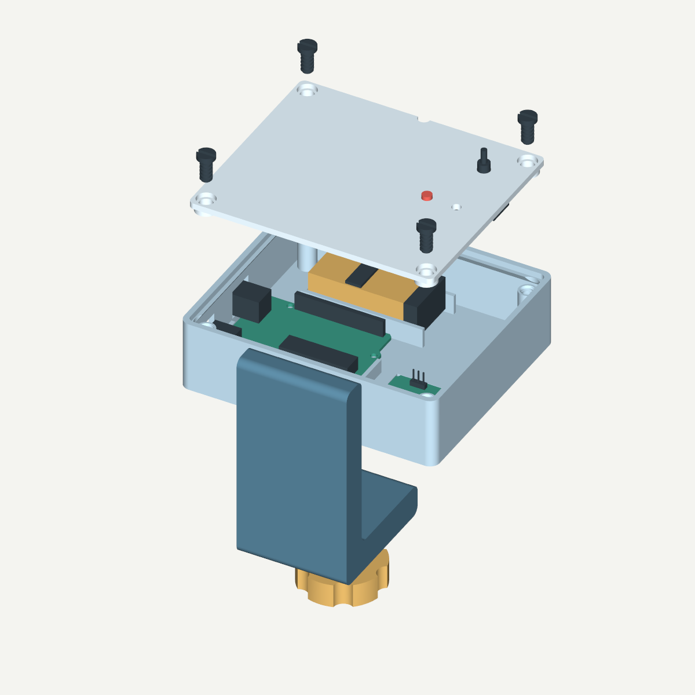

Загрузите программу
Выключите батарею. Скачайте архив программы и откройте TableMotion/TableMotion.ino в Arduino IDE. Выберите Arduino Uno и COM-порт, подключите USB и загрузите скетч. Дополнительные библиотеки не нужны.
Свет и звук при толчках и вибрации. Компактное устройство на Arduino, которое закрепляется на краю столешницы.
⊕ Нажмите на метку или компонент, чтобы посмотреть его назначение и крепление.

Прибор регистрирует ускорение, а не силу касания или перемещение в миллиметрах. Очень медленное движение может не обнаруживаться. Чувствительность настраивается на конкретном столе.
Подготовьте электронику и напечатайте 12 деталей из 6 файлов.
Провода, термоусадка, клей, совместимый с материалом корпуса и платой, отвёртка, паяльник и мультиметр.
На прижим батареи предусмотрена прокладка около 1,5 мм. На конец большого винта — тонкая защита поверхности стола.
Под платы прокладки не нужны. Датчик должен быть жёстко связан с корпусом.
| Деталь / файл | Количество | Положение |
|---|
STL уже ориентированы. Задайте по четыре копии винтов 05 и 06.
В слайсере проверьте поддержки у окон разъёмов и горизонтального резьбового отверстия. Зазоры требуют откалиброванного принтера.
После печати снимите заусенцы. Винты должны вкручиваться от руки. Не затягивайте тугую резьбу силой.
Сначала примерка и проверка электроники. Затем фиксация плат и окончательная сборка.
Собирайте при отключённых USB и батарее. Соединяйте контакты по маркировке на плате.
9 В подавайте только на VIN Arduino. Не подключайте Крону к 5V или напрямую к датчику. Все обозначения GND соединяются с общим минусом Arduino.
| Arduino / питание | Куда подключить |
|---|---|
5V → V · GND → G | Питание модуля AMP-B041 |
A4 → D · A5 → C | Датчик: SDA и SCL. Неподписанные контакты оставить свободными |
D6 | Через 330 Ом к аноду (+) LED; катод (−) LED к GND |
D9 | Через 1 кОм к «+» пищалки. От этой же точки 1,5 кОм к GND; «−» пищалки к GND |
| Крона «+» | Через выключатель к VIN Uno |
| Крона «−» | К GND Uno |
Мультиметром проверьте полярность и отсутствие коротких замыканий. Изолируйте каждый оголённый вывод и место пайки термоусадкой.
Схема рассчитана на AMP-B041 со стабилизатором и согласованием уровней и пассивную пищалку TDK PS1240P02BT. Голая микросхема и обычный динамик требуют другого подключения.
Загрузите программу, проверьте свет и звук. Окончательно закрепите платы после успешной проверки.
Выключите батарею. Скачайте архив программы и откройте TableMotion/TableMotion.ino в Arduino IDE. Выберите Arduino Uno и COM-порт, подключите USB и загрузите скетч. Дополнительные библиотеки не нужны.
Откройте монитор порта на 115200 бод. Не трогайте стол около 5 секунд. Мигание во время калибровки нормально. Сообщение READY означает готовность.
Отправьте команду t. Светодиод должен загореться примерно на секунду, пищалка — коротко прозвучать. Затем отключите питание, приклейте платы и дождитесь отверждения клея.
Финальная проверка — на собранном приборе. Закрепите корпус на столе, включите батарею и подождите около 5 секунд. Слегка толкните стол: должны сработать свет и звук. Датчик и струбцина не должны люфтить.
Наблюдайте 30–60 секунд неподвижный стол, затем повторите несколько одинаковых слабых касаний. Для настройки выключите батарею, подключите USB и откройте монитор порта на 115200 бод. После возможного перезапуска снова дождитесь READY.
Настройки сбрасываются после перезапуска; r задаёт порог заново. Для постоянной настройки измените MIN_THRESHOLD_G в программе. После события прибор пропускает толчки в течение 1,25 секунды. g — единица ускорения, не граммы.
Проверьте питание датчика, соединения V/G/D/C и сообщение в мониторе порта. После исправления отправьте r или перезапустите устройство.
Проверьте фиксацию датчика. Не двигайте стол, отправьте r и дождитесь READY.
Сначала устраните люфт струбцины и датчика. При ложных срабатываниях увеличьте порог командой +. Если нужные касания пропускаются, уменьшите порог командой -.
Проверьте команду b, тип пищалки и проводку от D9 через резисторы. Используется пассивный TDK PS1240P02BT.
Проверьте батарею, контактную колодку и выключатель. Продолжительность автономной работы зависит от батареи и требует измерения.
Уберите провода из-под края, проверьте заусенцы и резьбу. Не дотягивайте силой.
Модели для печати и редактирования, программа Arduino и иллюстрированная инструкция.
STEP · STL · Arduino · PDF · HTML
Винты 05 и 06 печатаются по 4 штуки. Сборочный STEP содержит условные модели электроники — их печатать не нужно.
| Деталь | STL | STEP |
|---|
Геометрия проверена в CAD, программа компилируется для Arduino Uno. Перед использованием проверьте посадку реальных компонентов, качество печати и чувствительность собранного устройства.